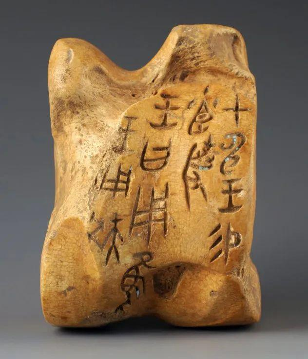
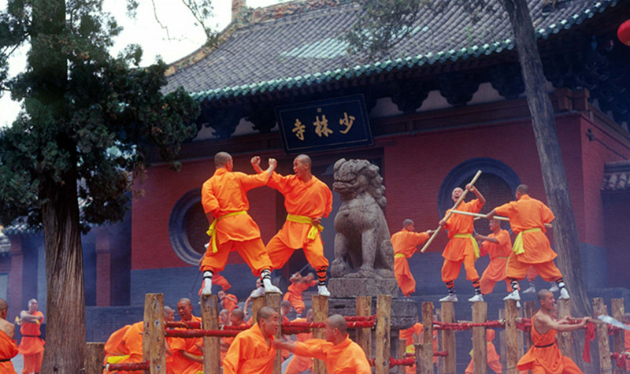

The Dawn of Words
Anyang: Yin Ruins
Before paper, there was bone and shell. Here in Anyang, the earliest known Chinese writing—Oracle Bone Script—was unearthed. Walking through the Yin Ruins is not just visiting a site; it is reading the original code of the Chinese civilization, carved over 3,000 years ago.

Fist and Spirit
Song Mountains: Shaolin
Hidden in the dense forests of the Song Mountains, the Shaolin Temple breathes tranquility and explosive power. It is the birthplace of Chan (Zen) Buddhism and the undisputed cradle of Chinese Kung Fu. Here, meditation and martial arts become one.
The Imperial Blossom
Luoyang City
Luoyang served as the capital for 13 dynasties. It is a city defined by stone carvings at Longmen and the unparalleled beauty of the Peony flower. Every spring, the city bursts into a riot of colors, celebrating a flower that symbolizes wealth, honor, and the grace of a bygone empire.